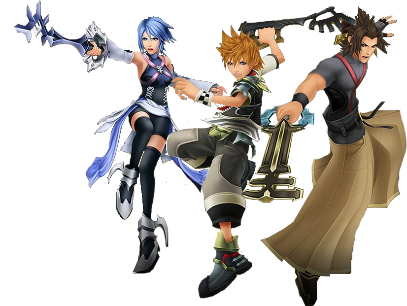

this is the site I want to introduce you to Birth by Sleep and its themes of manipulation
This paper will be about Kingdom Hearts Birth by Sleep and one key thing that is prevelant to the story; manipulation and the effects
of it on everyone involved, not just the victim. Here is an image of the three characters of the game who are directly affected by Xehanort.

These characters are named Terra, Aqua, and Ventus respectively. As stated earlier, they are directly affected by Xehanort's manipulation, and
met unfortunate fates in their debut game.
There is a surprising amount of emotion shown throughout Birth by Sleep; fear, doubt, betrayal, sadness, and even rage. We'll use Anzieu's theory
for this portion, before moving on to the rest. Now, Terra, Aqua and Ventus likely have normal human development and likely had their needs met prior to the
story in Birth by Sleep. However, in each route, they each go through hardships, some where their "cries" are not met. Something to note is that
Kingdom Hearts as a series is known for having all characters openly shown emotion. So why am I bringing up Anzieu?
It's quite simple if you break down each character's routes. Let's start with Terra, who was the most affected by Xehanort's manipulation. He had been led astray,
he thought Aqua and their master, Eraqus, truly distrusted him and left to be on his own, fought Master Eraqus and watch him be killed in front of him, and at the end of
his route is possessed by Xehanort and his will going to his armor and creating Lingering Will. Although Terra experiences serious doubts towards not just himself, but at
one point his own friends and even master as he is manipulated by Master Xehanort, through sheer will alone, he kept himself tethered to the realm of light as his will
possesses the armor. At the end of his route, Terra says this final quote as the screen fades to black and his back faces the viewer. 'Aqua... Ven... One day, I will set this
right." And so for over ten long years Terra patiently waits for the day to finally return as himself and free himself from Xehanort's influence. During that time, he was in
isolation. Who knows how that greatly effected Terra, who by that point is Lingering Will, regardless of just how strong Terra's will is. It is a great testament to his character
that even in isolation and all that happened to him, he chooses to keep going, even if all of his emotions were potentially not tended to during this time period.
insert image of Terra here before this is due
Next character I'll be talking about in regards to Anzieu's theory is Ventus. While there isn't too much to discuss of him, there is something relating to him in terms of
emotions and not having his needs met, which in turn leads to Ventus being another victim of Xehanort's manipulation and falling into a decade long slumber. Ven is the youngest of the
three, and for a long time after Xehanort brought Ventus to the Land of Departure and asked Eraqus to leave, he wasn't allowed to go to oher worlds. There is even a line where Ventus mentions
that no matter how many times he's asked, Eraqus refused to let him leave the Land of Departure. Xehanort used that to his advantage and turns Ventus against Eraqus, which almost causes
Ventus to be destroyed by Eraqus due to Ventus being half of what was needed to make the X-Blade. Another thing to mention is that Ventus was often treated as a little kid by most people,
but especially his friends and Eraqus. Which ties what Azieu says about what can happen if a child's needs isn't met and affects how they will be able to fend for themselves. In the end
of Ventus' route, after he defeats Vanitas,the darkness from Ventus' heart, Ventus' heart leaves him which cause Ventus to fall into a decade long slumber.
insert image of ventus here before this is due
The final character I'll discuss for the Aznieu section is Aqua. Like Terra and Ventus, she too got the short end of the stick. After becoming a Keyblade Master, not only is she tasked with
traveling to other worlds to defeat the Unversed, but Eraqus requests that she not only brings home when he goes after Terra, but to keep an eye on Terra and bring him back to the Land of Departure
should the darkness in his heart become too much. Throughout the first act of the game, Aqua is defending Terra. But as mentioned in Terra's section, manipulation led to distrust, and Aqua says the
wrong things and leads to distrust and her friends distancing themselves from her for a time before the final battle occurs. Now what about her fate? Well, she unfortunately has to fight Terra, who
by that point is possessed by Xehanort. But after he was defeated and seemingly saved from Xehanort's influence, Aqua sacrificed herself so that Terra wouldn't be in the realm of darkness. Okay, but
how does Anzieu's theory correlate to this? Because of her sacrifice, Aqua is trapped in the realm of darkness and is all alone. She walks aimlessly for a time, left alone just her thoughts and the
enemies that reside in the realm of darkness. The only hope she has is to one day see her friends again and wake Ventus up as she traverses through the hellish landscape for the equivalence of a decade.
Her desire to see her friends again isn't heard by anyone as she journeys alone, meaning that the need tos ee her friends again goes unmet for a long time, psychologically and emotionally affecting the
Keyblade Master.
insert picture of Aqua before this is due
For this next bit, I want you to take a listen to these songs, as they are the themes for Terra, Aqua, Ventus and Xehanort before you read the next paragraph.
There is a specific reason why I chose these four songs, as they all convey specific emotions and feelings for not just the viewers, but also encapsulates the characters in general. For Terra's
theme, it's very powerful and sounds so determined. It really encaspulates Terra's strong will and his loyalty to his friends despite everything that Xehanort does to lead him astray and later become
his vessel. add more in a few minutes or until i get the audio to work in the first place.